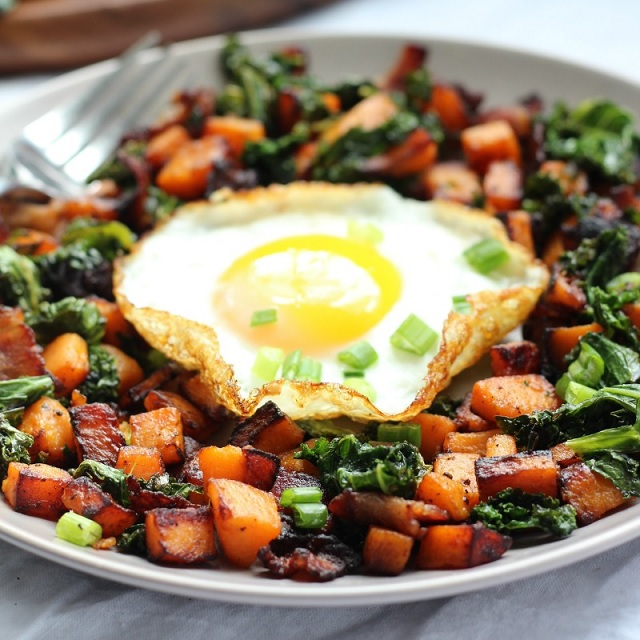

Potato Bacon Spinach Hash

Information
- TOTAL TIME: 0:20 PREP TIME: 0:05 COOK TIME: 0:15 SERVINGS: 1.5
| INGREDIENTS | QUANTITY |
|---|---|
| Tri-color potatos | 8-9 (hashed cubes) |
| Bacon | 3 slices (nicely chopped) |
| Paprika & Sea slat | generous pinch |
| Baby spinach | handful (roughly chopped) |
| Egg | 1 |
| Green onion | Thinly sliced (for garnish) |
| OPTIONAL VEGETABLES | |
|---|---|
| Sweet potato | Kale |
| Baby Tomatoes | Peppers |
Directions
- Heat well seasoned cast iron skillet (or other non-stick heavy skillet) over medium heat, and add the bacon pieces.
- Allow the bacon to cook just long enough to render some fat, then add the chopped sweet potatoes to the pan and stir to coat with the fat. Sprinkle on a pinch of salt along with the smoked paprika if you're using it.
Cover the pan with any cover to allow the potatoes to fry and steam at the same time (perfect fit not necessary) - Cook for about one-two minutes covered, then uncover and stir to prevent burning. Adjust the heat if necessary, then cover again and cook until the bacon and potatoes are browning and the potatoes are getting soft.
- Uncover the skillet and add the chopped kale, stir to coat the kale with bacon fat, add a pinch of salt then recover to allow the kale to cook.
- While the hash is cooking, you can fry or scramble your egg in a separate pan to serve alongside the hash. You can use rendered bacon fat for this or another cooking fat of choice.
- Once the bacon, potatoes and kale are cooked to preference, stir once again and then transfer to a plate to serve! Top with your cooked egg and garnish with green onion and additional salt and pepper if desired for a final touch.
Enjoy!
Notes
- Fry the bacon and potatos longer than you think you should.
- Add more kale/spinach than you think you should.